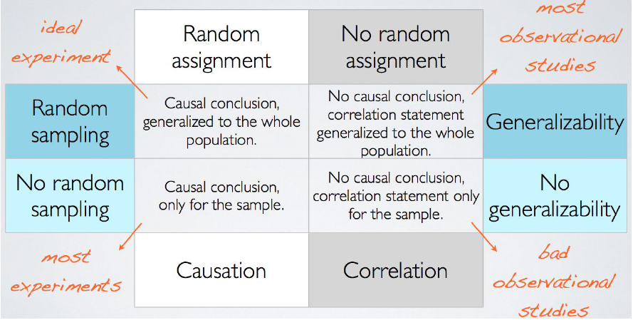

library(tidyverse)
library(skimr)
library(ggplot2movies)8 Populations and Generalizability
In this chapter we will continue our discussion of statistical theory, by learning about samples and populations. Until now, this book has focused on how to analyze data in a sample. In many instances, your goal is not to understand insights and trends in the sample but instead to make inferences from such insights and trends observed to trends in a larger population. This chapter provides a broad overview of the concepts of samples and populations and the links between them. In Chapter 9 we will provide a more theoretical connection between these two based on the theory of repeated samples and properties of sampling distributions.
Needed packages
Let’s load all the packages needed for this chapter (this assumes you’ve already installed them). If needed, read Section 1.3 for information on how to install and load R packages.
8.1 Terminology & Notation
In Parts I and II of this book, you were provided with sample data, methods for exploring this data visually, and methods for summarizing trends in this data. These methods are what we call descriptive statistics, as they are focused on describing the observed sample.
In science and policy, the goal of analysis is typically not just to understand trends in a sample but instead to make inferences from this sample to trends in a population. For example, in order to understand the relationship between party affiliation and voting, you might conduct a poll in a sample of 100 (or 1,000) voters by mail, phone-call, or by stopping them on the street. Or, in order to determine if a new drug effectively reduces high blood pressure, you might conduct a randomized experiment in a sample of 200 patients experiencing high blood pressure.
Why not use population data instead? While a census of every person (or unit) in a population would be ideal, it’s not hard to see that doing so is costly in many regards — financially and in terms of time and personnel.
In order to understand the relationship between samples and populations, we begin by providing some vocabulary and notation that we will use throughout the remainder of the book.
Population: A population is a collection of individuals or units about which we are interested. We mathematically denote the population’s size (i.e. the total number of individuals or units) using upper-case \(N\).
Sample: A sample is a collection of individuals or units from a population. These are the individuals or units about which we have (or will collect) data. We mathematically denote the sample’s size, the number of people or units we have (or will collect) data on, using lower-case \(n\).
Population parameter: A population parameter is a numerical value that summarizes the population. In almost all cases the population parameter is unknown, but we wish to know it. Population parameters are typically denoted mathematically using Greek letters. For example, you may want to know the population mean, which is typically written as \(\mu\) (pronounced “mu”). Or, you might want to know the population proportion, which is typically written as \(\pi\) (pronounced “pi”). Population size, \(N\), is a case where we do not follow the Greek letter convention to denote a population parameter.
Sample statistic / estimate : A sample statistic is a numerical value that summarizes the sample and can be used to estimate an unknown population parameter. It is common for a sample statistic to sometimes be called an estimate or point estimate. These are sometimes denoted mathematically using Roman letters (that correspond to Greek letters) or via inclusion of a “hat” above the population parameter (called hat-notation). For example, the population proportion \(\pi\) can be estimated using a sample proportion which is denoted with \(\hat{\pi}\) or \(p\). The population mean \(\mu\) can be estimated using the sample mean which is denoted \(\hat{\mu}\) or \(\overline{x}\). Obviously \(\overline{x}\) doesn’t follow either the Greek letter or hat-notation conventions, but it is the standard notation for the sample mean.
Census: A census is an exhaustive collection of a measurement on all \(N\) individuals or units in the population in order to compute the exact value of a population parameter for the given measure.
Random sampling: Random sampling is the act of using a random procedure to select individuals or units from a population that we will collect measurements on. Random sampling is extremely useful when we don’t have the means to perform a census. Here “random” means that every individual or unit in the population has a chance of being selected and that the process of selection is uncorrelated with the data itself. For example, a random procedure might involve rolling dice, selecting slips of paper out of a hat, or using a random number generator.
The first two of these definitions makes clear that the data you have in hand (sample) is being used to make inferences to a larger set of data you don’t have (population). Definitions 3 and 4 refine these further, focusing on the specific numbers you wish you knew (population parameter) and the ones you are able to calculate using your data (estimate / sample statistic). Definitions 5 and 6 refer to how a sample is related to a population — either they are the same (census) or the mechanism through which they are related needs to be clear (random sampling).
The goal is to use data in the sample to make inferences to a value in the population. The act of “inferring” is to deduce or conclude (information) from evidence and reasoning. Statistical inference is the theory, methods, and practice of forming judgments about the parameters of a population and the reliability of statistical relationships, typically on the basis of random sampling (Wikipedia). In other words, statistical inference is the act of inference via sampling.
Table 8.1 gives some common population parameters we might be interested in and their corresponding estimators that we use to calculate estimates from our sample data. Note that we have used many of these estimators in Parts I and II of the book when we calculated summary statistics to describe our data (e.g. mean, standard deviation, correlation, regression coefficients). The next few chapters will help establish the statistical theory and conditions under which we can use these estimators to infer things about their corresponding population parameters.
| Statistic | Population parameter | Parameter pronunciation | Estimator - Roman letter notation | Estimator - “hat” notation |
|---|---|---|---|---|
| Proportion | \(\pi\) | “pi” | \(p\) | \(\widehat{\pi}\) |
| Mean | \(\mu\) | “mu” | \(\overline{x}\) | \(\widehat{\mu}\) |
| Standard deviation | \(\sigma\) | “sigma” | \(s\) | \(\hat{\sigma}\) |
| Correlation | \(\rho\) | “rho” | \(r\) | \(\hat{\rho}\) |
| Regression intercept | \(\beta_0\) | “beta zero” or “beta nought” | \(b_0\) | \(\widehat{\beta}_0\) |
| Regression slope | \(\beta_1\) | “beta one” | \(b_1\) | \(\widehat{\beta}_1\) |
8.2 Populations & Sampling
Recall that a population is a collection of individuals or observations that you would like to make inferences about. Some examples of populations are:
- Citizens of voting age (18 or older) in the United States.
- Students in public elementary schools in Texas.
- Private hospitals receiving Medicaid funding in California.
- Fish in Lake Michigan.
In each case, the definition of the population includes clear inclusion / exclusion criteria. These help to clarify where inferences are appropriate to be made and where they are not.
In order to select a sample from a population, a population frame must be created. A population frame includes a list of all possible individuals or observations within the population. Sometimes this frame is difficult to make - and the result is that the population frame may not be exactly the same as the population. For example, for the above populations, population frames might be:
- A list of phone numbers registered to individuals in the United States. (Once contacted, only those that are citizens 18 and older would be able to be included.)
- A list of public elementary schools (not students), available for the prior year in the Texas public education state longitudinal data system.
- A list of private hospitals made available from the state of California government in a database collected every five years. (Once contacted, only those receiving > $0 Medicaid would be included).
- Areas of Lake Michigan where it is possible to fish (e.g, excluding coves).
When this population frame differs from the population, undercoverage can occur - i.e., there are parts of the population that may not be able to be studied. For example, citizens over 18 without phone numbers would have a 0% chance of being included in the sample even though they are part of the population of interest. It is important in research to make this clear and to understand how these differences might impact results.
Once a population frame is defined, a sampling process is developed that, based upon a random procedure, allows for making clear inferences from the sample to the population. There are many possible sampling procedures, some of which include:
- Simple random sampling: Individuals or observations are selected randomly from the population, each having an equal chance of being selected.
- Random sampling with unequal probability: Individuals or observations are selected randomly, but the probability of selection varies proportional to size or some other relevant characteristic.
- Cluster sampling: In order to reach individuals or observations, first clusters are selected (e.g. schools, neighborhoods, hospitals, etc.), and then within these clusters, individuals or observations are randomly selected.
- Stratified sampling: In order to represent the population well, first the population is divided into sub-groups (strata) that are similar to one another, and then within these sub-groups (strata), individuals or observations are randomly selected.
Observations or clusters can be selected with equal probability or unequal probability — the most important feature is that the probability of being selected is known and defined in advance of selection. In the above examples, these procedures might be used:
- Simple random sampling: Phone numbers are randomly selected with equal probability.
- Cluster sampling: First schools (clusters) are randomly selected with unequal probability (e.g., larger schools have a bigger chance of being selected), and then within those schools selected, students are randomly selected with equal probability.
- Random sampling with unequal probability: Hospitals are selected randomly with unequal probability (e.g., larger hospitals have a bigger chance of being selected).
- Stratified sampling: Lake Michigan is geographically divided into four regions (strata): those nearby to the shore in urban areas, those nearby the shore in non-urban areas, those in the middle north, and those in the middle south. It is expected that the number and kinds of fish differ across these regions. Within each region, fish are selected randomly based upon a catch-and-release procedure.
In all of these cases, because the sample is selected randomly from the population, estimates from the sample can be used to make inferences regarding values of the population parameters. For example, a sample mean calculated in a random sample of a population can be used to make inferences regarding the value of the population mean. Without this random selection, these inferences would be unwarranted.
Finally, note that in the examples and data we use in this book and course, we focus on random sampling with equal probabilities of selection (i.e. simple random sampling). Methods to account for clustering, stratification, and unequal selection probabilities require use of weights and, sometimes, more complicated models. Courses on survey sampling, regression, and hierarchical linear models will provide more background and details on these cases.
8.3 Movies Example
8.3.1 Research question
Perhaps we are interested in studying films from the 20th century. For example, say we want to answer the question: “What percentage of movies from the 20th century pass the Bechdel Test?” The Bechdel Test is a measure of the representation of women in fiction. For a movie to pass the Bechdel Test it must meet three criteria:
- The movie must have at least two [named] women in it…
- who talk to each other…
- about something besides a man.
Determining whether a film meets this criteria requires you to watch and pay attention to the dialogue in its entirety. It’s not hard to imagine why doing this for the whole population of movies is not feasible, because there are tens of thousands of them. You must take a sample. But how do you choose your sample in such a way that you can be confident that your results will generalize to the whole population of movies?
Let’s discuss how we might go about developing a sampling plan to tackle this question, using the terminology from Sections 8.1 and 8.2.
8.3.2 Population of interest
Our research question specifies that we are interested in the results of the Bechdel test for movies in the 20th century. Note that the earliest movies were all silent films, and dialogue in movies did not become the norm until the 1930s. This means that movies prior to the 1930s are irrelevant in terms of the Bechdel test. Therefore, we can define our population of interest to be all movies released between 1930 and 1999. The population parameter we are interested in is \(\pi\), the proportion of movies in this population that pass the Bechdel test.
8.3.3 Development of population frame
We must develop a population frame that includes a list of all movies in our population of interest. Thankfully, the IMDb database functions as a census of movies, and that data is available in a dataset called movies in the ggplot2movies package. It includes 24 variables with information on 58788 movies and their ratings by users on IMDb. For now, we’ll look at a smaller subset of just 4 of these variables: the title of the movie, the year it was released, its length in minutes, and its average rating on IMDb (out of 10 stars). The full dataset contains information on movies released from 1893 to 2005, so we should filter only the rows for the years relevant to our population of interest. Let’s take a look at this data.
movies_30_99 <- movies %>%
select(title, year, length, rating) %>%
filter(year >= 1930 & year <= 1999)
skim(movies_30_99)Skim summary statistics
n obs: 46522
n variables: 4
── Variable type:character ────────────────────────────────────────────────────────────────────────────
variable missing complete n min max empty n_unique
title 0 46522 46522 1 110 0 44761
── Variable type:integer ──────────────────────────────────────────────────────────────────────────────
variable missing complete n mean sd p0 p25 p50 p75 p100
length 0 46522 46522 84.38 44.72 1 76 90 100 5220
year 0 46522 46522 1971.94 20.73 1930 1955 1975 1991 1999
── Variable type:numeric ──────────────────────────────────────────────────────────────────────────────
variable missing complete n mean sd p0 p25 p50 p75 p100
rating 0 46522 46522 5.84 1.53 1 4.9 6 6.9 9.9How well does this population frame match our population of interest? Should we be concerned about undercoverage here? The documentation for the ggplot2movies package indicates that “movies were selected for inclusion if they had a known length and had been rated by at least one imdb user.” This means that any movies that don’t meet these critera will not appear in our population frame and therefore have no chance of ending up in our sample. We can acknowledge this potential source of undercoverage, but movies excluded by these criteria are not likely to be of interest for our question anyway, so we don’t need to be too concerned in this scenario.
When we skimmed the data, we saw that one movie is as short as 1 minute and one is as long as 5220 minutes. Perhaps we feel like this list includes films that we would not classify as “standard movies,” so in order to eliminate some of these extremes, we decide to narrow our population of interest to any films that are at least 1 hour in length, but at most 3.5 hours in length.
movies_30_99 <- movies_30_99 %>%
filter(length >= 60 & length <= 210)
skim(movies_30_99)Skim summary statistics
n obs: 39123
n variables: 4
── Variable type:character ────────────────────────────────────────────────────────────────────────────
variable missing complete n min max empty n_unique
title 0 39123 39123 1 105 0 37740
── Variable type:integer ──────────────────────────────────────────────────────────────────────────────
variable missing complete n mean sd p0 p25 p50 p75 p100
length 0 39123 39123 95.33 18.51 60 85 93 103 210
year 0 39123 39123 1973.4 19.7 1930 1958 1977 1991 1999
── Variable type:numeric ──────────────────────────────────────────────────────────────────────────────
variable missing complete n mean sd p0 p25 p50 p75 p100
rating 0 39123 39123 5.75 1.51 1 4.8 5.9 6.8 9.9This is an example of how data in a population frame can actually help you to think more critically about your population of interest. Seeing the range of movies that are included in the frame prompted us to realize we were interested in something more specific than just “all movies,” and therefore we can refine our definition and create additional inclusion criteria. Note that as a researcher or analyst sometimes you have to make decisions about your data that seem somewhat arbitrary, but so long as you document each decision and are explicit and transparent about your inclusion criteria, you (and others) will be able to determine with clarity what kinds of generalizations can be made from your eventual results.
Let’s list all of our inclusion criteria. Our population frame includes movies that:
- are included in the IMDb database
- were released between 1930 and 1999
- have a known length between 60 and 210 minutes
- were rated by at least one IMDb user
This results in a population of size \(N =\) 39123 movies.
8.3.4 Sampling plan
Now that we’ve solidified our population of interest and our population frame, we can establish a sampling plan for how to take a random sample from this population. Perhaps we decide it is feasible for our research team to watch and record data on 500 movies, so we decide to draw a sample of \(n = 500\). We will demonstrate 3 different random sampling plans, but note that in real life you will make a decision about the most appropriate and feasible plan and only draw one random sample.
Simple random sampling
Let’s start by drawing a simple random sample, where each of the 39123 movies have an equal probability of ending up in our sample. We can accomplish this in R using the sample_n() function.
movies_SRS <- movies_30_99 %>%
sample_n(500)
glimpse(movies_SRS)Rows: 500
Columns: 4
$ title <chr> "Anne of Green Gables", "Dark Age", "Tevya", "Cyclone on Horseb…
$ year <int> 1934, 1987, 1939, 1941, 1985, 1967, 1964, 1970, 1971, 1958, 198…
$ length <int> 78, 91, 93, 60, 105, 98, 100, 102, 87, 78, 120, 122, 91, 87, 78…
$ rating <dbl> 7.1, 4.5, 6.4, 5.6, 6.7, 4.6, 5.2, 3.4, 6.1, 3.5, 7.6, 6.8, 3.3…Stratified sampling with unequal probability
Perhaps we expect movies within a particular decade to be more similar to each other than to movies in other decades. In this case, we could take a stratified sample (instead of a simple random sample), where the population is partitioned into sub-groups (i.e. strata) by decade, and a random sample is taken within each decade. In order to accomplish this in R, let’s first create a new decade variable and then use group_by() in combination with sample_n() to take an independent random sample for each decade. Note that since there are 7 decades, we can sample 71 movies from each decade in order to end up with approximately 500 movies total in our sample (\(7 * 71 = 497\))
movies_30_99 <- movies_30_99 %>%
mutate(decade = floor(year / 10) * 10)
movies_strata <- movies_30_99 %>%
group_by(decade) %>%
sample_n(71)
glimpse(movies_strata)Rows: 497
Columns: 5
Groups: decade [7]
$ title <chr> "Broken Lullaby", "Bonnie Scotland", "Charlie Chan at the Circu…
$ year <int> 1932, 1935, 1936, 1938, 1938, 1935, 1934, 1938, 1933, 1938, 193…
$ length <int> 76, 80, 72, 93, 90, 67, 73, 66, 62, 63, 92, 78, 82, 80, 79, 63,…
$ rating <dbl> 7.2, 6.7, 7.1, 6.5, 6.9, 4.5, 5.9, 5.9, 6.8, 6.4, 5.9, 6.9, 7.4…
$ decade <dbl> 1930, 1930, 1930, 1930, 1930, 1930, 1930, 1930, 1930, 1930, 193…Note that because there were not an equal number of movies per decade in the population, sampling a fixed number of movies per decade (e.g. 71) is actually an example of sampling with unequal probabilities. For example, since there were only 2863 movies in the 1930s, each movie from this decade had a \(71 / 2863 * 100 =\) 2.48% chance of being selected, but movies from the 1990s only had a \(71 / 10788 * 100 =\) 0.658% chance of being selected. Table 8.2 shows the selection probabilities for each strata.
movies_30_99 %>%
count(decade) %>%
mutate(prob = 71 / n)| decade | n | prob |
|---|---|---|
| 1930 | 2863 | 0.025 |
| 1940 | 3226 | 0.022 |
| 1950 | 4271 | 0.017 |
| 1960 | 4782 | 0.015 |
| 1970 | 5841 | 0.012 |
| 1980 | 7352 | 0.010 |
| 1990 | 10788 | 0.007 |
Stratified sampling with equal probability
We could instead decide to draw a stratified sample with equal probabilities. Since overall we want a sample with \(n = 500\), and we have a population of size \(N =\) 39123, we can choose to sample \(500 / 39123 *100 = 1.28\%\) of the movies from each strata. Using the function sample_frac() instead of sample_n() allows us to do this.
movies_strata_equal <- movies_30_99 %>%
group_by(decade) %>%
mutate(N_strata = n()) %>% #needed for later calculations
sample_frac(0.0128)Table 8.3 shows the number of movies that were sampled per strata, n_strata. These numbers are proportional to the total number of movies in that decade in the population N_strata. This results in each movie in the population having equal probability of selection into the sample.
movies_strata_equal %>%
group_by(decade) %>%
summarise(n_strata = n(), N_strata = unique(N_strata),
prob = n_strata / N_strata)| decade | n_strata | N_strata | prob |
|---|---|---|---|
| 1930 | 37 | 2863 | 0.013 |
| 1940 | 41 | 3226 | 0.013 |
| 1950 | 55 | 4271 | 0.013 |
| 1960 | 61 | 4782 | 0.013 |
| 1970 | 75 | 5841 | 0.013 |
| 1980 | 94 | 7352 | 0.013 |
| 1990 | 138 | 10788 | 0.013 |
Once we have our sample of \(n\) movies, we could then begin data collection. For each movie, we would record whether or not it passed the Bechdel test. We would then calculate our point estimate \(\hat{\pi}\), the proportion of movies in our sample that pass the Bechdel test, which serves as our estimate of the population proportion \(\pi\). Recall that we mentioned in Section 8.2 that using a more complicated sampling method, such as stratified sampling, also requires a more complicated formula for computing point estimates. In the simple random sampling case, however, we calculate the sample proportion in exactly the way you would expect: \(\hat{\pi} = \frac{x}{n}\), where \(x\) is the number of movies in the sample passing the test, and \(n\) is the sample size.
In the next few chapters we will discuss how much uncertainty we would expect there to be in our estimate \(\hat{\pi}\) due to the fact that we are only observing a sample and not the whole population.
8.4 Samples from Unclear Populations
As an analyst, you will often encounter samples of data that come from unspecified or unclear populations. For example, you:
- developed a survey regarding relationship preferences on SurveyMonkey and then promoted completing this survey on Facebook. Now you have a sample of \(n = 200\) completed surveys - but what population do they come from?
- conducted an experiment in a psychology lab. The experiment is advertised to students in Introductory Psychology courses and in fliers around campus. You now have a sample of \(n = 50\) participants in the experiment - but what population do they come from?
- scraped some data off the web regarding movie reviews on Rotten Tomatoes. You now have a huge sample of \(n = 10,000\) reviews by people - but what population do these reviews come from?
In these situations, statistically you do two things:
You can assume that the sample you have is a random sample from some population. You can thus make inferences to this larger population using the sampling theory we will develop in the next chapters.
You need to define as clearly as you can what population this sample is from. This involves using clear inclusion / exclusion criteria.
Finally, keep in mind that no study generalizes everywhere. It is your job as analyst to make clear where results might be useful for making inferences and where they may not. To do this requires describing characteristics of the sample clearly when interpreting results and making inferences. In general:
- Ask: Do the results apply to all individuals or observations? If not, think through how the results might be dependent upon the types of individuals or observations in your sample.
- Report clearly the characteristics that might affect interpretation and inferences (e.g., race, ethnicity, gender, age, education).
- Report clearly how the data was generated. Was it from on online survey? Report this. Was it from a lab study advertised in a college? Report this.
8.5 Causality vs. Generalizability
In Chapter 7 we talked about the process of random assignment (e.g. in randomized experiments), and in this chapter we talked about the process of random sampling. These two types of randomization processes are at the core of inferential statistics:
- Random assignment allows us to make causal claims
- Random sampling allows us to make generalizable claims
The ideal experiment would have both random assignment and random sampling so that you could have a casual conclusion that is generalizable to the whole population. Figure 8.1 shows a 2 X 2 table of the possible experiment and observational study types and the conclusions that can be drawn from each.

Let’s give an example of each.
- Random assignment + random sampling
- You take a random sample of students at your university to participate in your study on exercise and stress. You randomly assign half of the participants to a prescribed workout regimen of 30 minutes of cardio per day. You collect data on the stress levels in all participants via surveys and biomarkers such as cortisol. Your results can validly conclude that any differences in stress between the two groups were caused by the excersize regimen because it was randomly assigned, and those conclusions can be generalized to the whole student body because it was a random sample.
- Random assignment only
- You advertise your study on campus and ask volunteers to participate. Once you have recruited enough participants, you randomly assign half of them to the exercise treatment. Your results can validly conclude that the effects of exercise on stress are causal because you used random assignment, but you cannot generalize beyond your sample because you did not use random sampling. There could be characteristics about those that volunteered to particpate that influence how effective the treatment is likely to be as compared to those who chose not to participate.
- Random sampling only
- You take a random sample of students at the university to participate in your study. You collect data on their exercise habits and their stress. If your data indicates a negative relationship between exercise and stress (i.e. as exercise increases, stress decreases), you can conclude that relationship is generalizable to the whole student body, but you cannot claim that increased exercise caused reduced stress. There could be confounding characteristics about students who choose to exercise more that also reduce their stress (e.g. better sleep or nutrition habits).
- Neither random assignment nor random sampling
- You advertise your study on campus and ask volunteers to participate. You collect data on their exercise habits and their stress. If your data indicates a negative relationship between exercise and stress, you can only validly conclude that the relationship is associational and true for your sample only. There may differences between people in your sample who choose to exercise and those who do not, as well as differences between people who volunteered to participate in your study and those who did not.
In Chapter 7 we demonstrated the magic of randomization and why randomized experiments allow you to make causal claims. In this chapter we have introduced you to the idea that random sampling allows you to make generalizable claims from your sample to a population, but in Chapter 9 we will introduce and demonstrate the statistical theory for why this is true.
8.6 Exercises
8.6.1 Conceptual
Exercise 8.1 The US Census is performed once every 10 years. Which of the following describes the exact value that results from this endeavor?
- a sample statistic
- a sample estimate
- a population
- a population parameter
- a random sample
- a random count
Exercise 8.2 Which of the following denote sample statistics? Select all that apply.
- \(\mu\) d. \(\bar{x}\) g. \(p\) j. \(\sigma\)
- \(\hat{\mu}\) e. \(\pi\) h. \(\hat{p}\) k. \(\hat{\sigma}\)
- \(x\) f. \(\hat{\pi}\) i. \(s\)
Exercise 8.3 Which of the following types of sampling involve random selection? Select all that apply.
- Simple random sampling
- Random sampling with unequal probability
- Cluster sampling
- Stratified sampling
Exercise 8.4 Farmer Henry owns an apple picking orchard and wants to estimate the total number of apples on his lot so that he can calculate his potential earnings. It would not be time or cost efficient to count every single apple in the orchard. Instead Farmer Henry divides his land into 20 regions and randomly selects one region to count. What type of sampling is this?
- Simple random sampling
- Cluster sampling
- Stratified sampling
- Systematic sampling
- None of the above
Exercise 8.5 You are interested in opening an ice cream parlor and want to determine what flavors to offer. You sit outside Baskin Robins and ask every 8th customer what their favorite ice cream flavor is. What type of sampling is this?
- Simple random sampling
- Cluster sampling
- Stratified sampling
- Systematic sampling
- None of the above
Exercise 8.6 As an upcoming politician, you want to determine if daylight savings time should be removed. You obtain a list of all citizens in the United States and randomly sample 500 citizens from each state. What type of sampling is this?
- Simple random sampling
- Cluster sampling
- Stratified sampling
- Systematic sampling
- None of the above
Exercise 8.7 In a study, towns in the state of Illinois are chosen with their probability of selection based on the size of the town. Then, individuals living in these towns are randomly selected (with equal probability) to participate in an Illinois wellness survey. What type of sampling is this?
- Simple random sampling
- Random sampling with unequal probability
- Cluster sampling
- Stratified sampling
Exercise 8.8 True or False: Random assignment allows us to make generalizable claims and random sampling allows us to make causal claims.
- True
- False
Exercise 8.9 A generalizable correlation statement for the whole population that does not allow for a causal conclusion is the result of which type of experiment/observational study?
- An experiment with random assignment and random sampling
- An experiment with random assignment and but no random sampling
- An observational study with random sampling but no random assignment
- An observational study with no random sampling and no random assignment
Exercise 8.10 You are an employee at Walmart and want to determine customer satisfaction in regards to opening and closing times. To determine this, you stand out front of the store right when it opens and survey the first 100 (willing) customers that enter the store. Can you make causal and generalizable claims from the results of your survey?
- Yes, you can make causal and generalizable claims from the results of your survey
- No, you can make causal claims but you cannot make generalizable claims from the results of your survey
- No, you can make generalizable claims but you cannot make causal claims from the results of your survey
- No, you cannot make causal or generalizable claims from the results of your survey
8.6.2 Application
Exercise 8.11 You are tasked with surveying the general populace of the US to determine if US citizens think the government is doing an adequate job of supporting climate change endeavors. To do so, you are provided with a master list of all addresses in the US and are asked to use this to perform a simple random sample of 50,000 households, sending one survey to each household for completion.
Define your population of interest, population parameter, population frame and point estimate. Describe any limitations of the study (does undercoverage exist?).
Exercise 8.12 Consider the scenario from Exercise 8.11 again. The organization tasking you with the survey believes that states are similar, and asks you to randomly sample 1,000 households within each state (using the state-wide master lists of addresses), sending one survey to each household for completion.
What type of sample is this and how would this sample differ from the simple random sample you performed in Exercise 8.11? Describe any limitations of the study (does undercoverage exist?) and compare any limitations to that of the design in Exercise 8.11.
8.6.3 Advanced
Exercise 8.13 You work for an organization that aims to raise money to protect the Amazon rainforest. The organization wants to talk about endangered species that live within the Amazon rainforest at an upcoming benefit, but the previously hired statistician was terrified of jaguars so he/she was unable to perform the study to estimate the jaguar population. Consequently, your organization cannot say for certain if jaguars are endangered or not.
Develop a sampling plan to estimate the total number of jaguars in the world. What type of sample would you perform? Define your population of interest, population parameter, population frame and point estimate. Describe any limitations of the study (does undercoverage exist?).